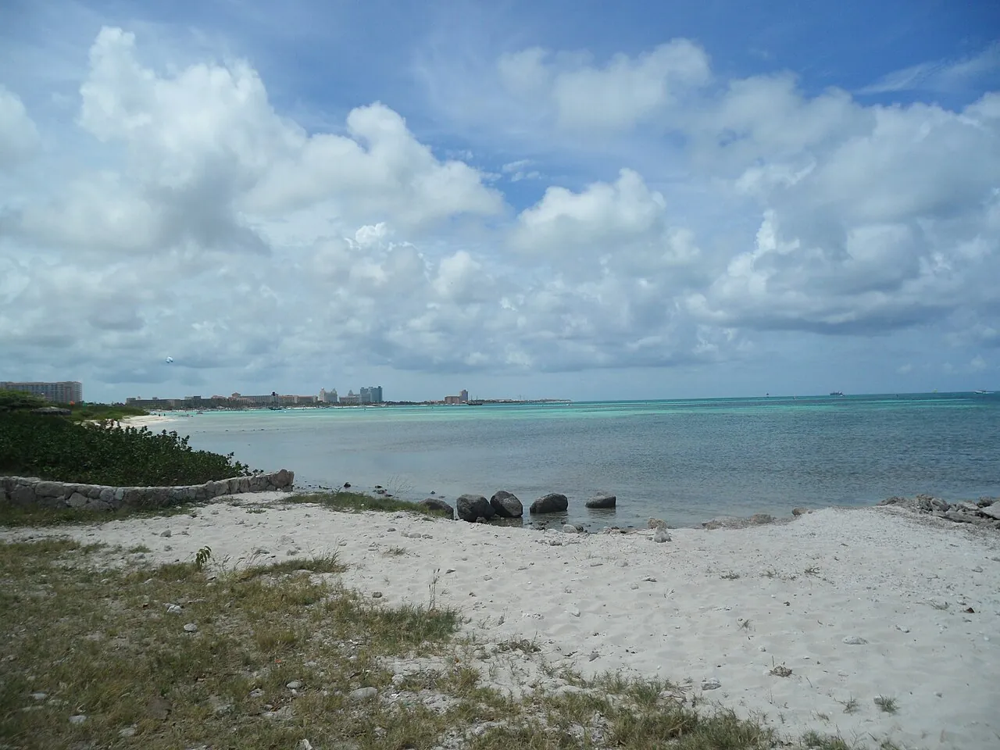

Hadicurari
Aruba · windsurf, kitesurf

Spot de glisse au nord d’Aruba, balayé par les alizés presque toute l’année. Eau plate près du bord, chaude et turquoise.
- Lieu
- Aruba
- Niveau
- Intermédiaire
- Activités
- windsurf, kitesurf
- Type d'eau
- Mer / océan
- Coordonnées
- 12.58, -70.05 (position approximative du secteur)
Dangers à connaître
- Alizés forts.
- Circulation près des hôtels.
Le conseil d'Ocean Buddy
Respecte les couloirs de navigation : kite et windsurf sont séparés.
Ouvrir dans Ocean Buddy Télécharger sur l'App Store
Source : Fiche Ocean Buddy · septembre 2026 · à vérifier localement.